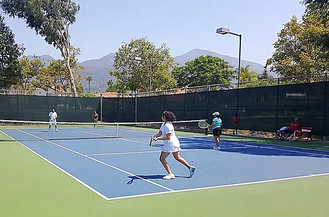
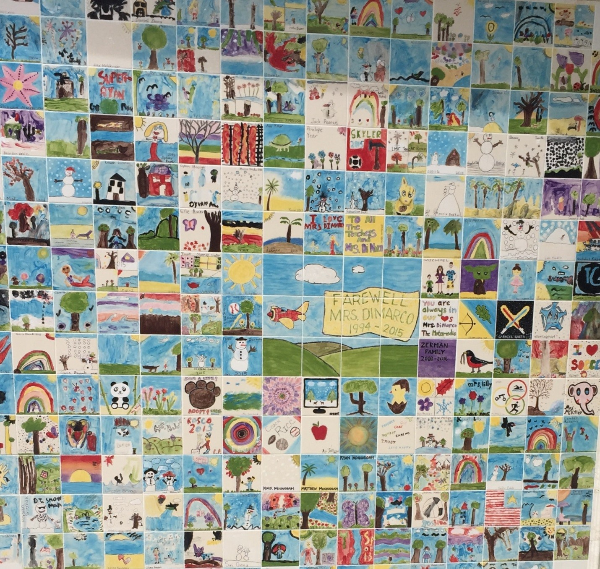
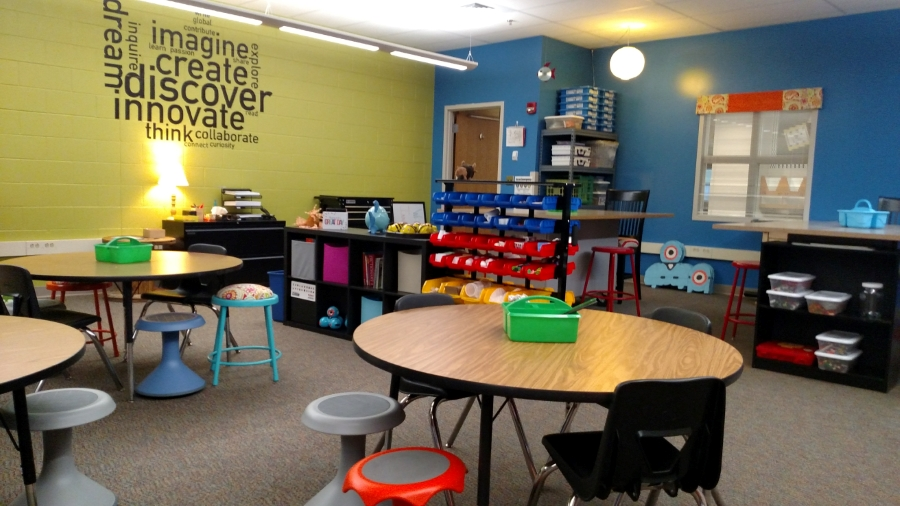
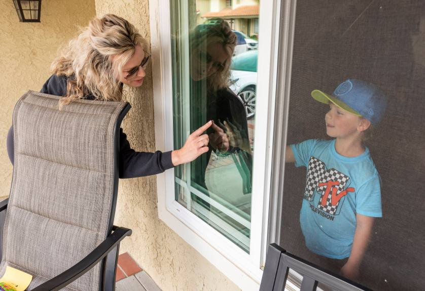

Trabuco Mesa Elemetery
Playground
Good for all grades 1-6.
Trabuco's playground is very wide. It has a mini scoccer field, boy and girl restrooms, jumpropes,balls, and a play set.
Tennis Court
Good for all ages
Trabuco's tennis court is open to the public. Some poeple even have tennis lessons there.
.jpg)
Courtyard
Free for all parents and children to see
The courtyard is the entrance to the school. They also have very nice paint tiles that students have painted themselves. This is also for old students to remember the past.
Kelly got the Award of Best teacher in Orange County once again.
She has this kindness acts that tells students to preform such acts to their school, family, friends, or some random people.
Trabuco Mesa finnally had been open for 30 years!
Trabuco Mesa had been open for thirty years, 1988-2018. Now, in 2021, they would be open for about 33 years!
What's New?
-
An innovation Lab was born
After many many long days and nights and the tireless efforts of Mrs. Kelly and her crew, we are proud to announce that the Trabuco Mesa Innovation Lab is open. Students in all grade levels now have access to Ozobots, Vex Robotics, a Lego wall, Makerspace, Merge Cubes, a green screen, and all the imagination they can muster up! 🖥️💻📽️🎤🎙️🧩🎨🎭 🤖📱 Special thanks to the Monnig family for the phenomenal wall decor!
-
Teacher visted student from window to stay in touch
Trabuco Mesa Elementary kindergarten teacher Stacie Anne Williams, left, gives a finger touch through the front window to her student Jayden Beach, 6, after delivering him a sea shell and a poem she wrote at his home in Rancho Santa Margarita on Wednesday, March 25, 2020. Since the school is closed due to the coronavirus Williams decided to visit each of her 27 students at their home and deliver the poem and sea shell to each student and Lifesavers candy to the moms.